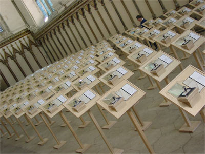

John Newling working with InSite Arts proposed this installation to the Cathedral with the support of Canterbury City Council. The project was funded by Canterbury City Council with assistance from Arts Council England South East, The Henry More Foundation and Nottingham Trent University. Working in partnership with the Council and the Cathedral John was able to deliver this most extraordinary project.
In this work John, with exceptionally sensitivity, explored the notion of Uncertainty. He asked a question "What does it mean to write a question within a text that becomes a hymn?" Taking the Ancient and Modern Hymn book, he edited from it the questions embedded in the hymns finding a total of one hundred and forty seven.
"to find questions in the texts of Hymns is to witness uncertainty in the struggle for faith".
- John Newling
John transferred all 147 texts on to rubber stamps, a symbol of supposed certainty. The dichotomy between the uncertainty of the questions and the certainty of the stamps was a palpable concept that questioned the nature of the relationship between institutions (stamps of certainty) and faith (uncertainty that necessitates trust).
The work was realised as an installation that ran for 5 weeks consisting of nineteen rows of lecterns with eight lecterns per row, covering the whole floor area of the Chapter House. With the lecterns facing the far wall of the Chapter House, they face in the manner of the congregation. The stamps on the lecterns in the order they arise in the hymn book. Moving through the installation is to travel through the sequence of intense poetic uncertainty.
"The work is, in part, an acknowledgement of a Cathedral that, as an institution and as a place, resides in a pivotal balance between certainty and uncertainty. Uncertainty is a human need. To sing these questions is to voice that need.".
- John Newling

 Photography:
Paul Hough
Photography:
Paul Hough